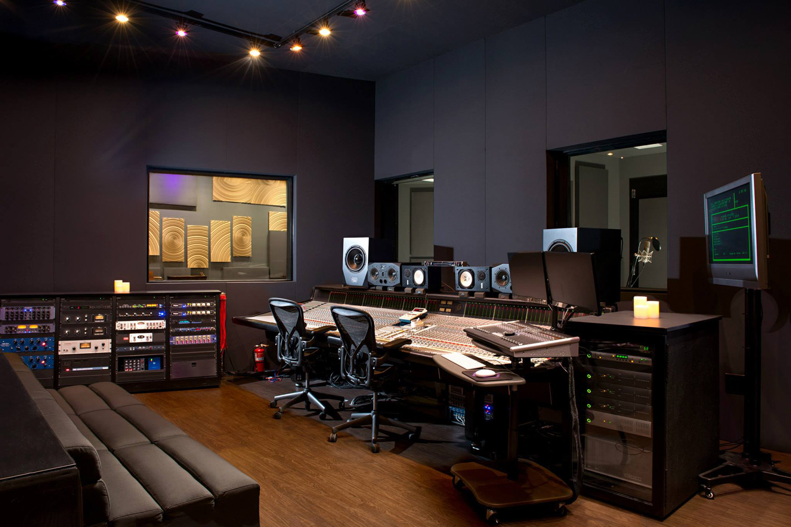

Студиен звукозапис
Запис на вокали, инструменти и цели групи в акустично обработено помещение.
Виж детайлиMusicLab Studio е модерно музикално студио в София, специализирано в звукозапис, микс и мастъринг за солови изпълнители, групи и подкасти.
Помагаме ти да превърнеш идеята или демото си в готов за излъчване сингъл – от първата проба до финалния мастър.

Запис на вокали, инструменти и цели групи в акустично обработено помещение.
Виж детайлиПрофесионална обработка на твоите тракове, така че да звучат добре навсякъде – слушалки, кола, клуб.
Виж детайлиУютно място за подготовка преди запис или концерт, с включено озвучаване и техника.
Виж детайли„Записахме първия си сингъл в MusicLab и резултатът надмина очакванията ни. Много търпение и полезни съвети по време на целия процес.“
„Като начинаещ изпълнител имах нужда от човек, който да ме насочи. Получих не само качествен запис, но и ценни насоки за вокалното представяне.“